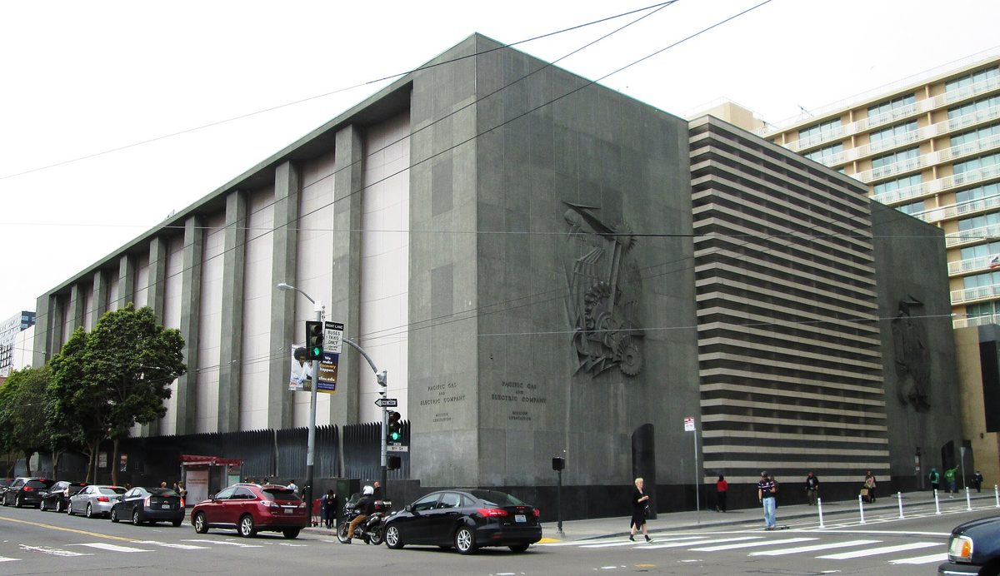

PG&E, 샌프란시스코 전력망 인수 비용 225억 달러 제시…시 평가액 34억 달러의 6배 넘어

캘리포니아 공공요금위원회에 자산 139억·영업 분리 손해 76억·물리적 분리 10억 달러 제출…시는 부풀린 숫자라고 반발, 가치 결정은 2027년보다 늦어질 듯
미국 샌프란시스코시가 추진하는 공공 전력 전환을 두고, 전력회사 PG&E가 시내 송배전망을 넘기는 데 225억 달러가 든다는 자료를 주 규제기관에 냈다. PG&E는 20일(현지시각) 캘리포니아 공공요금위원회(CPUC)에 낸 증언에서 시내 전력·부동산 자산 139억 달러, 영업 분리에 따른 손해 76억 달러, 설비를 물리적으로 떼어 내는 비용 10억 달러를 합한 액수를 내놨다. 이는 시가 앞서 평가한 약 34억 달러의 6배가 넘는 금액으로, 시는 2021년 7월 CPUC에 자산 가치평가를 청구했고 CPUC의 최종 결정은 2027년으로 예상됐지만 더 늦어질 것으로 보인다. 데이비드 추 샌프란시스코 시 법무관은 지난해 12월 10만 명 넘는 주민이 피해를 본 대정전 이후 대규모 정전이 40번, 거의 매주 한 번꼴로 났다며 "독점을 지키는 데 금전적 이해가 걸린 전력회사가 자산 가치를 최종 결정하지는 않는다"고 반박했다. 시의 PG&E 분리를 돕는 법안을 낸 스콧 위너 캘리포니아주 상원의원은 영업 분리 손해 청구를 전례 없는 요구라고 비판했고, 마이클 와라 스탠퍼드대 연구원은 두 평가 모두 빠진 비용이 있어 실제 비용은 그 중간 어딘가이며 PG&E 안은 상한에 가깝다고 내다봤다.
시민에너지 관점
샌프란시스코 시 공공요금위원회(SFPUC)에 따르면 PG&E 전체 시스템의 가치는 약 600억 달러이고 샌프란시스코가 차지하는 수요는 약 5%인데, 인수 비용으로 전체 가치의 3분의 1이 넘는 225억 달러가 제시됐다. 공공 인수가 세금 부담만 키운다는 반론도 있지만, 매주 한 번꼴로 정전을 겪는 도시가 망을 직접 가지려는 것은 요금과 안전을 시민이 결정하겠다는 뜻이다. 전력망이 공공과 시민의 자산이 되면 수익은 주주 배당이 아니라 설비 투자와 요금으로 돌아간다. 우리 지자체도 에너지공사와 시민 출자로 지역 전력 자산을 늘려 가되, 나중에 비싼 값에 되사지 않도록 처음부터 지역이 소유하는 구조로 짓는 일부터 시작해야 한다.
출처: KQED 2026-10-21 Samantha Kennedy 원문 보기
PG&E、サンフランシスコの電力網買収費用に225億ドルを提示…市の評価額34億ドルの6倍超
カリフォルニア州公益事業委員会に資産139億・営業分離の損失76億・物理的分離10億ドルを提出…市は水増しした数字だと反発、価値の決定は2027年より遅れる見通し
米サンフランシスコ市が進める公営電力への転換をめぐり、電力会社PG&Eは市内の送配電網を引き渡すには225億ドルかかるとする資料を州の規制機関に提出した。PG&Eは20日（現地時間）、カリフォルニア州公益事業委員会（CPUC）での証言で、市内の電力・不動産資産139億ドル、営業分離に伴う損失76億ドル、設備を物理的に切り離す費用10億ドルを合わせた額を示した。これは市が先に評価した約34億ドルの6倍を超える金額で、市は2021年7月にCPUCへ資産価値の評価を申し立てており、CPUCの最終決定は2027年と見込まれていたが、さらに遅れる見通しだ。デビッド・チウ市法務官は、昨年12月に10万人超の住民が影響を受けた大停電以降、大規模停電が40回、ほぼ毎週1回のペースで起きたと指摘し、「独占を守ることに金銭的な利害を持つ電力会社が資産価値を最終的に決めるわけではない」と反論した。市のPG&Eからの分離を後押しする法案を出したスコット・ウィーナー州上院議員は営業分離の損失の請求を前例のない要求だと批判し、スタンフォード大学のマイケル・ワラ研究員は、双方の評価とも抜けている費用があり、実際の費用はその中間のどこかで、PG&E案は上限に近いとの見方を示した。
市民エネルギーの視点
サンフランシスコ市公益事業委員会（SFPUC）によると、PG&Eのシステム全体の価値は約600億ドルで、サンフランシスコが占める需要は約5%にすぎないのに、買収費用として全体価値の3分の1を超える225億ドルが示された。公営化は税負担を増やすだけだという反論もあるが、毎週のように停電に見舞われる都市が自ら電力網を持とうとするのは、料金と安全を市民が決めるという意思の表れだ。電力網が公共と市民の資産になれば、収益は株主への配当ではなく設備投資と料金に回る。韓国の自治体もエネルギー公社と市民出資で地域の電力資産を増やしつつ、後で高値で買い戻さずに済むよう、最初から地域が所有する仕組みで建てることから始めるべきだ。
出典: KQED 2026-10-21 Samantha Kennedy 原文を読む
PG&E称旧金山收购电网需225亿美元…是市政府估值34亿美元的6倍多
向加州公用事业委员会提交资产139亿、业务分离损失76亿、物理分离10亿美元…市政府斥为夸大数字，资产价值裁定可能晚于2027年
围绕美国旧金山市推动的公营电力转型，电力公司PG&E向州监管机构提交材料称，移交市内输配电网需要225亿美元。PG&E 20日（当地时间）在加州公用事业委员会（CPUC）的证词中提出，这一金额由市内电力和不动产资产139亿美元、业务分离造成的损失76亿美元以及物理拆分设施的费用10亿美元组成。这比市政府此前估算的约34亿美元高出6倍多。市政府于2021年7月向CPUC申请资产估值，CPUC原定2027年作出最终裁定，但看来还会推迟。旧金山市检察长David Chiu指出，自去年12月一场影响10万多名居民的大停电以来，大规模停电已发生40次，几乎每周一次，并反驳说，"在保护垄断上有经济利益的电力公司，并不能对其资产价值说了算"。提出法案协助旧金山脱离PG&E的加州参议员Scott Wiener批评，业务分离损失的索赔是前所未有的要求；斯坦福大学研究员Michael Wara则认为，双方的估值都漏掉了一些成本，实际成本可能介于两者之间，而PG&E的方案接近上限。
市民能源视角
据旧金山公用事业委员会（SFPUC）介绍，PG&E整个系统价值约600亿美元，旧金山的用电需求仅占约5%，而PG&E提出的收购费用却高达225亿美元，超过整体价值的三分之一。有人反驳说公营化只会加重纳税人负担，但一个几乎每周停电的城市想要亲自拥有电网，体现的是由市民决定电价和安全的意愿。电网一旦成为公共和市民的资产，收益就不再流向股东分红，而是回到设备投资和电价上。韩国地方政府也应通过能源公社和市民出资扩大地方电力资产，并且从一开始就按地方所有的方式建设，以免将来高价回购。
来源: KQED 2026-10-21 Samantha Kennedy 查看原文
PG&E puts San Francisco grid takeover cost at $22.5 billion, more than six times the city's $3.4 billion valuation
Filing with the California Public Utilities Commission lists $13.9 billion in assets, $7.6 billion in business severance and $1 billion in physical separation; the city calls the figure inflated, and a valuation decision may slip past 2027
In San Francisco's push to move to public power, the utility PG&E has told state regulators that handing over the city's transmission and distribution grid would cost $22.5 billion. In testimony to the California Public Utilities Commission (CPUC) on the 20th, PG&E put forward a total made up of $13.9 billion for electric and property assets in the city, $7.6 billion in losses from business severance, and $1 billion to physically separate the system. That is more than six times the city's earlier valuation of about $3.4 billion; the city petitioned the CPUC for a valuation in July 2021, and a final decision expected in 2027 now looks likely to take longer. City Attorney David Chiu said there have been 40 large-scale blackouts, roughly one a week, since a huge outage hit more than 100,000 residents last December, and countered that "a utility with a financial interest in protecting its monopoly doesn't have the last word on what its assets are worth." State Sen. Scott Wiener, who wrote legislation to help the city break away from PG&E, called the severance claim an unprecedented demand, while Stanford researcher Michael Wara said both valuations leave out costs, putting the true figure somewhere in the middle with PG&E's estimate likely the ceiling.
Citizen Energy View
According to the San Francisco Public Utilities Commission (SFPUC), PG&E's entire system is worth about $60 billion and San Francisco makes up only about 5% of demand, yet the takeover price put forward is $22.5 billion, more than a third of the system's total value. Some argue a public takeover only adds to taxpayers' burden, but a city hit by blackouts almost weekly wants to own its grid because residents want to decide on rates and safety themselves. When the grid becomes a public and citizen asset, its returns go into investment and rates rather than shareholder dividends. Korean local governments, too, should expand local power assets through municipal energy corporations and citizen investment, and start by building them under local ownership from day one so they never have to buy them back at a high price.
Source: KQED 2026-10-21 Samantha Kennedy Read the original